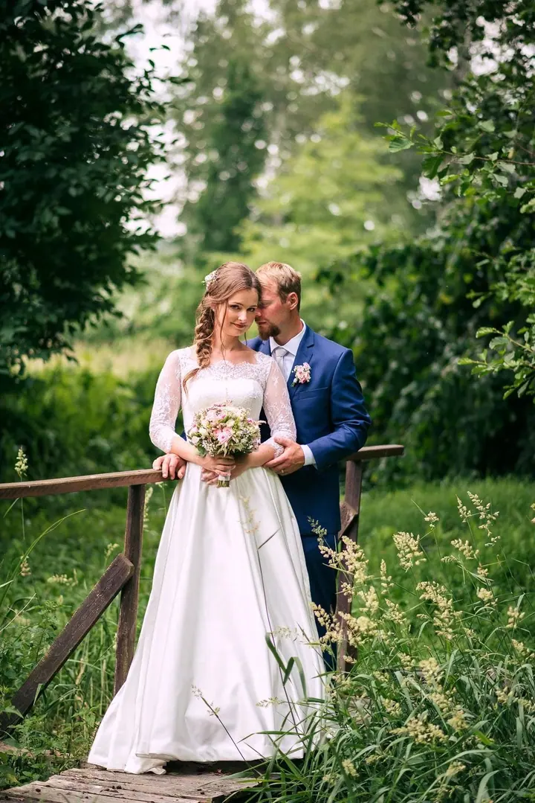
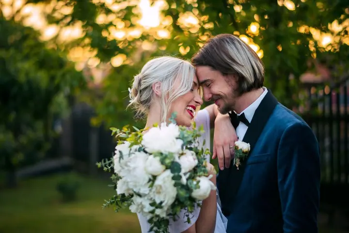
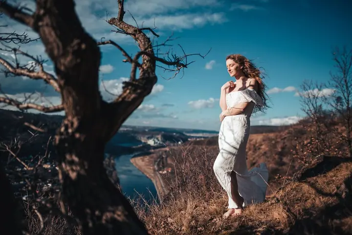

jedna
Svatební focení
Svatbu fotím reportážně jako kamarád s foťákem. Do průběhu dne nezasahuji a stylizuji jen skupinky a párové focení, takže si oslavu užijete a já zachytím váš den tak, jak se opravdu stal.

Svatební a rodinný fotograf · Dobříš, Praha, Střední Čechy

Jmenuji se Patrik Hácha a jsem svatební a rodinný fotograf z Dobříše. Místo strojeného „sýr“ hledám skutečné emoce, od výbuchů smíchu po slzy dojetí. Fotím hlavně v Praze a ve Středních Čechách, ale rád za vámi dojedu kamkoliv.
Více o mně
Co fotím
jedna
Svatbu fotím reportážně jako kamarád s foťákem. Do průběhu dne nezasahuji a stylizuji jen skupinky a párové focení, takže si oslavu užijete a já zachytím váš den tak, jak se opravdu stal.
dvě
Portrétní focení venku v přírodě, nejradši v teplém světle. Jde mi o přirozený výraz a atmosféru místa, ne o strojenou pózu.
Fotím rodinné okamžiky v uvolněné atmosféře, bez křečovitého pózování. Před Vánoci v ateliéru na Dobříši připravuji vánoční mini focení s tematickými scénami pro rodiny s dětmi, sourozence i páry.
Fotím i pro firmy. Rozsah a podobu focení s vámi domluvím podle toho, k čemu fotky budete potřebovat.

Místo „sýr“ skutečné emoce


Za objektivem
Ahoj, já jsem Patrik. Hledáte fotografa, se kterým nebudete muset křečovitě pózovat? Fotím svatby a rodiny a nejvíc mě baví skutečné emoce. Chci, aby z fotek byla cítit radost, smích a atmosféra toho okamžiku. Žádnou legraci rozhodně nezkazím.
Na svatbě jsem s vámi jako kamarád s foťákem. Fotím reportážně a nenápadně, takže zachytím dojetí babičky i výbuch smíchu kamarádů přesně tak, jak se to stalo. Když je potřeba, pomůžu i s vázáním kravaty nebo se svoláním hostů, abyste si den mohli v klidu užít.
Základnu mám na Dobříši, kde mám i vlastní ateliér. Svatby fotím v Praze a po celých Středních Čechách, ale rád dojedu kamkoliv. Na svém blogu píšu tipy, jak si naplánovat harmonogram dne, aby se vám dobře slavilo a vznikly z toho i hezké fotky.
Patrik
Nejdřív si u mě ověřte termín. Pokud jsem volný, sejdeme se do týdne online nebo u kávy a probereme, jak si svatbu představujete.
Měsíc před svatbou se potkáme osobně, nejlépe rovnou na předsvatebním focení. Zvyknete si na objektiv a společně doladíme harmonogram dne.
Fotím reportážně a do průběhu nezasahuji, stylizuji jen skupinky a párové focení. Vy slavíte, já zachycuji váš příběh.
Do 2 dnů po svatbě pošlu první ochutnávku (10+ fotek) v online galerii. Kompletní upravené fotky dostanete do 3 týdnů v dárkovém balení s USB diskem.
Portfolio
Otázky
Napište mi přes formulář nebo e-mail, kdy a kde se svatba koná a jakou atmosféru si představujete. Odpovím do 24 hodin a domluvíme si nezávazný videohovor nebo kávu.
Svatební focení začíná na 6 500 Kč. Přesnou cenu vám pošlu podle délky a rozsahu vašeho dne.
První ochutnávku pošlu do 2 dnů po svatbě. Kompletní sadu upravených fotek dostanete do 3 týdnů, k tomu dárkové balení s USB diskem.
Focení na Dobříši trvá 20–30 minut a stojí 2 500 Kč za 5 výsledných fotek, každá další je za 250 Kč. Fotky k výběru pošlu nejpozději do týdne a když je dítě stydlivé, dáme mu čas se rozkoukat.